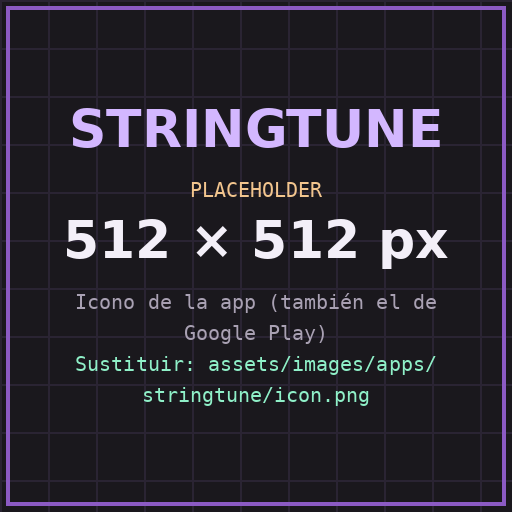
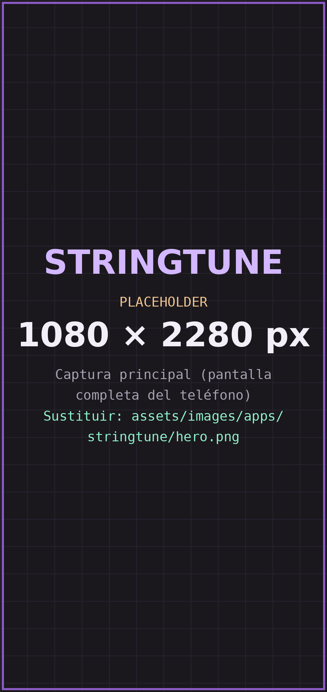
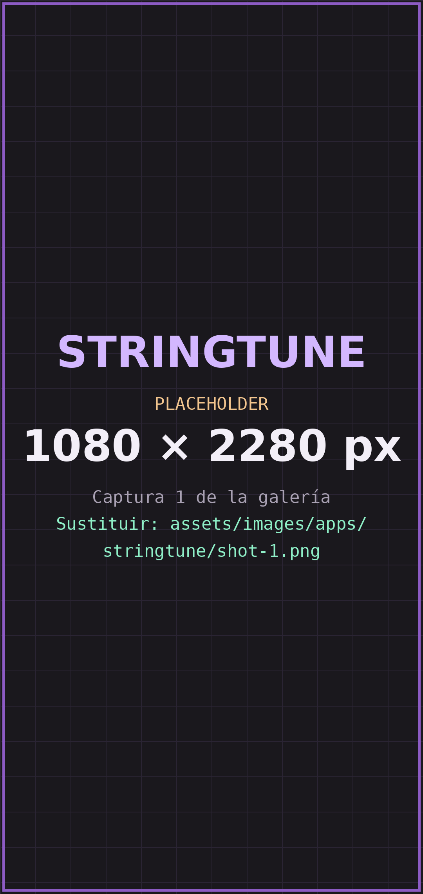
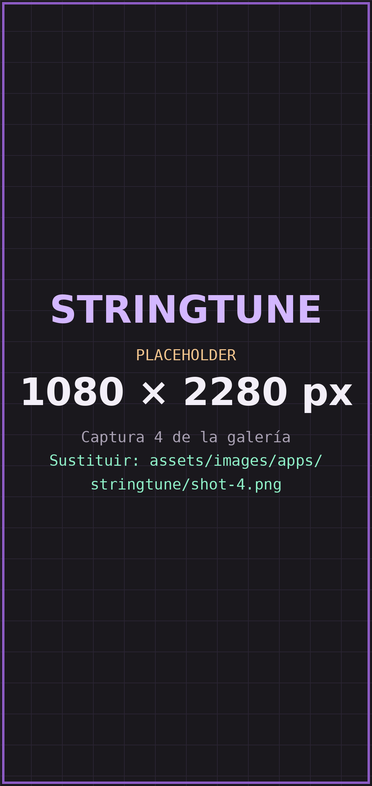

Detección automática
Escucha la nota que estás tocando y muestra su frecuencia y su desviación respecto a la nota objetivo.

ANDROID · AUDIO Y UTILIDADES
Un afinador gratuito para instrumentos de cuerda, con una referencia visual clara y directa. Sin cuentas, anuncios ni compras dentro de la aplicación, y sin depender de una conexión a internet.
Aún no está en Google Play. Esta página se actualizará con el enlace de descarga.

CÓMO FUNCIONA
Así funciona StringTune. La demostración es ilustrativa y no usa tu micrófono.
Prueba la demostración: elige una cuerda y mira cómo cambia la lectura. Se pausa al pasar el cursor.
FUNCIONES
Escucha la nota que estás tocando y muestra su frecuencia y su desviación respecto a la nota objetivo.
Una visualización alternativa para consultar la afinación con mayor detalle.
Selecciona instrumentos y usa distintas afinaciones según lo que necesites tocar.
Configura las cuerdas y sus notas objetivo para adaptar la herramienta a tu instrumento.
Consulta las notas de referencia y ajusta de acuerdo con la afinación que estés usando.
El análisis de audio se hace en el dispositivo, sin enviar la señal del micrófono a servidores.
CAPTURAS
Imágenes ilustrativas: la interfaz final puede cambiar hasta la publicación.


PRIVACIDAD
StringTune pide lo mínimo para funcionar. Aquí está el resumen; el detalle completo está en la política de privacidad.
Leer la política de privacidad ↗PREGUNTAS FRECUENTES
Sí. StringTune es gratuita y la versión descrita no incluye anuncios, suscripciones ni compras dentro de la aplicación.
No. El análisis de audio se realiza en tu dispositivo, así que puedes afinar sin conexión.
Es la única forma de “escuchar” tu instrumento. El micrófono se usa solo para detectar la frecuencia de las notas; StringTune no es una app de grabación.
Es una referencia. Puede variar según el micrófono del dispositivo, el ruido ambiental y el instrumento, y puede ser menos fiable en entornos ruidosos o con frecuencias muy graves. Comprueba siempre la afinación antes de ajustar tu instrumento.
Sí. Puedes configurar las cuerdas y sus notas objetivo para adaptarlas a tu instrumento.
DISPONIBILIDAD
StringTune estará disponible para Android a través de Google Play. Es gratuita y la podrás usar sin conexión.
¿Dudas o comentarios? Escribe a angeldanielcjaramillo@gmail.com.